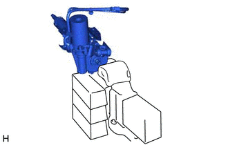
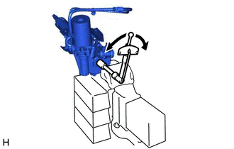
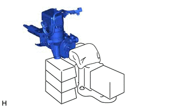
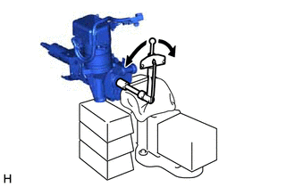
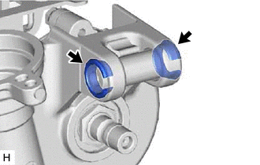
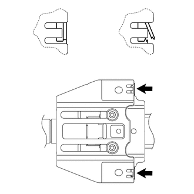

RM3140CG
_55
转向
_023996
转向柱
_0116091
转向柱总成
G
转向柱 转向柱总成 检查
程序

 1.检查预紧力（电刷型马达）
1.检查预紧力（电刷型马达）
a.

1.083,1.729 0.729,1.469
0.729,1.469 1.073,1.208
false
0.74,1.469 1.083,1.448
false
1.938,1.031 2.281,1.031
false
2.313,0.938 2.625,1.094
0.313,0.156
10
false
*a
0.563,1.385 0.875,1.542
0.313,0.156
10
false
*b
| *a | 布 |
| *b | 木块 |
使用铝板、布和木块将转向柱总成固定在台钳上。
- 备注：
-
不要过度紧固台钳。
b.

0.854,0.917 1.427,0.917
true
0.552,0.844 1.01,1.042
0.458,0.198
10
false
SST
使用 SST 和扭矩扳手以约每 4 秒 1 圈的速率恒速转动转向主轴并测量预紧力。
- SST
- 09616-00011
- 预紧力:
0.8 至 1.4 N*m（8 至 14 kgf*cm，7 至 12 in.*lbf）
如果预紧力不符合规定，则用新的动力转向马达总成或电动转向柱分总成更换。
2.检查预紧力（无刷型马达）
a.

0.698,1.354 0.698,1.74
0.698,1.74 0.917,1.74
false
1.677,0.865 1.677,0.698
1.677,0.698 2.01,0.698
false
0.552,1.344 0.917,1.344
false
0.698,1.531 0.917,1.531
false
1.854,0.885 1.854,0.698
false
2.052,0.625 2.365,0.781
0.313,0.156
10
*a
0.375,1.271 0.688,1.427
0.313,0.156
10
*b
| *a | 布 |
| *b | 木块 |
使用铝板、布和木块将转向柱总成固定在台钳上。
- 备注：
-
不要过度紧固台钳。
b.

0.594,0.958 1.354,0.958
true
0.323,0.875 0.781,1.073
0.458,0.198
10
SST
使用 SST 和扭矩扳手以约每 4 秒 1 圈的速率恒速转动转向主轴并测量预紧力。
- SST
- 09616-00011
- 扭矩:
- 预紧力:
0.9 至 1.5 N*m（10 至 15 kgf*cm，8 至 13 in.*lbf）
如果预紧力不符合规定，则用新的带马达的动力转向 ECU 总成或电动转向柱分总成更换。
3.检查转向柱总成
a.

检查并确认 2 个衬套已牢固安装到转向柱总成上。
如果衬套变形、遗失或损坏，则用新的电动转向柱分总成更换。
b.

1.177,0.573 1.354,0.573
false
2.708,0.573 2.885,0.573
false
1.396,0.51 1.708,0.667
0.313,0.156
10
*1
2.917,0.51 3.229,0.667
0.313,0.156
10
*1
0.885,1.01 1.198,1.167
0.313,0.156
10
*a
2.438,1.031 2.75,1.188
0.313,0.156
10
*b
| *1 | 封壳 |
| *a | 正常 |
| *b | 异常 |
如图所示，检查并确认 2 个封壳牢固安装到电动转向柱分总成上。
如果封壳变形、损坏或错位，则用新的电动转向柱分总成更换。
4.检查转向锁工作情况（不带智能进入和起动系统）
a.
检查并确认拔出钥匙后转向锁止机构被激活。
b.
检查并确认插入钥匙并将其置于 ACC 位置后，转向锁止机构解除锁止。
如果有任何异常情况，则更换点火开关锁芯总成或转向柱上支架总成。